前言
这篇文章首发于Fisher的简书
最近比较喜欢和同学玩创意工坊地图，但是和同学不在同一个局域网。任何一个人的电脑做主机延迟和loss都非常的高，玩起来体验非常的差。正好阿里云的服务器可以以每月9.5元的学生价搞到一台云服务器，因此我便开始研究如何搭建私人的CS:GO服务器。在参考了Wilf的博客之后，我成功地搭建了自己的游戏服务器，在此十分感谢Wilf！
下面正式开始服务器搭建
创建新用户，安装steamcmd，安装CS:GO服务端
使用ssh以root用户身份登录到服务器，创建名为steam的用户，并切换到该用户和该用户的根目录下（用户名可以自行选择，但在后续的操作中，路径需要进行替换）
1 | useradd -m steam # 添加名为steam的用户 |
创建名为steamcmd的文件夹，下载steamcmd并解压
1 | mkdir steamcmd # 创建名为steamcmd的文件夹 |
安装运行steamcmd所需的环境，运行steamcmd并安装CS:GO服务端
1 | sudo yum install glibc.i686 # 安装steamcmd运行所需的库 |
在操作无误的情况下，看到下面的命令行之后，steamcmd就安装完成了
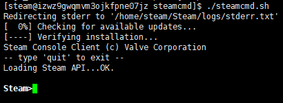
接下来便是在steamcmd中安装CS:GO
以匿名用户身份登录steamcmd
1 | login anonymous |
创建CS:GO服务器文件夹，该文件夹在steamcmd文件夹目录下
1 | force_install_dir ./csgo_server |
安装csgo服务端（15分钟左右）
1 | app_update 740 validate |
在看到如下图片中最后的行的”Success!”后，表明CS:GO服务端安装成功（此处使用了更新成功的图片，但同样是”Success!”字样）
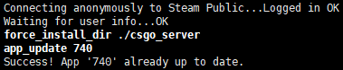
安装完成后，退出steamcmd
1 | quit |
编写CS:GO更新脚本（可选）
更新脚本主要用于一键更新游戏服务器，从而避免每次都要手动输入更新命令的麻烦
编写steamcmd的runscript脚本
在steamcmd目录下（退出steamcmd.sh后的当前目录），创建新的update.txt文件
1 | vi update.txt |
进入编辑模式，写入以下语句，然后保存退出
1 | login anonymous |
编写steamcmd运行脚本
在steamcmd目录下，使用vim创建新的csgo_server_update.sh文件
1 | vi csgo_server_update.sh |
进入编辑模式，写入以下语句后保存退出
1 |
|
测试脚本
在steamcmd目录下运行脚本csgo_server_update.sh1
./csgo_server_update.sh
若运行结果如下所示，则更新脚本编写完成，以后可以直接使用该命令一键更新CS:GO服务器
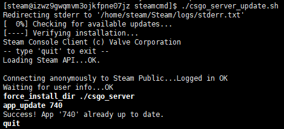
出现了权限不足的情况，提升权限再次运行即可
1 | chmod 775 csgo_server_update.sh |
配置并运行CS:GO服务端
前往Steam游戏服务器帐户管理注册steam服务器登录令牌。没有该令牌服务器只能在本地网络中进行连接，在社区服务器浏览器中也不会显示。（网站可能无法连接，推荐使用Steamcommunity 302工具修复连接问题）
在App ID中填入CS:GO的ID：730。备忘录中填入：CSGO服务端令牌（选填）
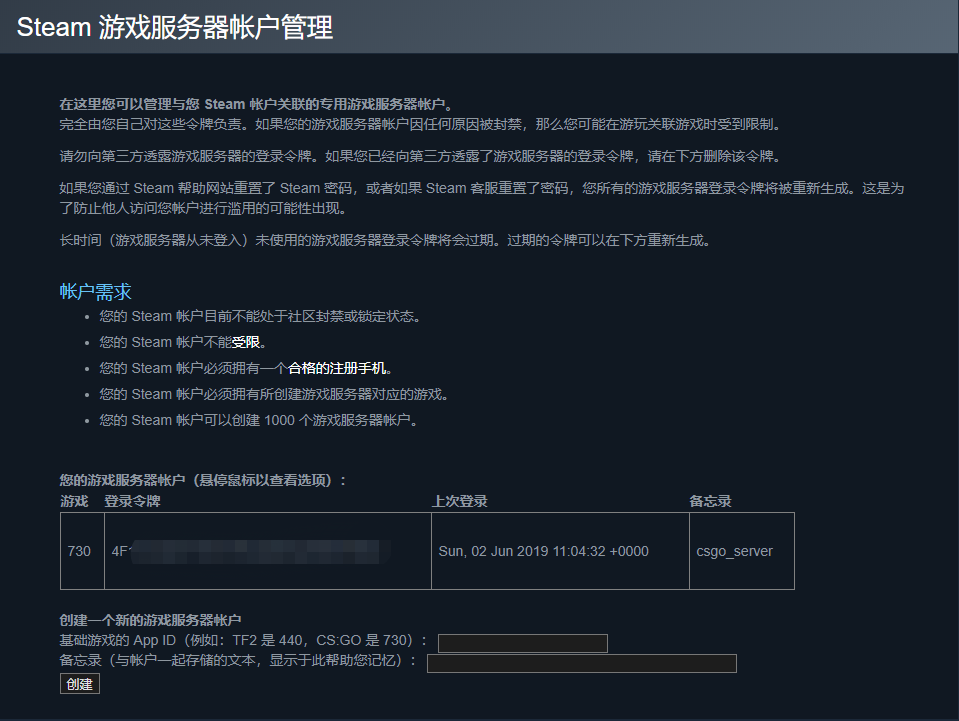
点击创建之后便获得了登录令牌，不要将该令牌泄露出去，该令牌用于服务器在CS:GO社区服务器中验证
下载服务器配置文件server.cfg
切换目录到CS:GO的cfg文件夹下，下载server.cfg文件，编辑server.cfg文件1
2
3cd csgo_server/csgo/cfg/
wget http://www.csgodev.com/downloads/server.cfg
vi server.cfg
进入编辑模式，在server.cfg文件中添加登录令牌，修改部分参数（这部分一定要改，不然很影响游戏体验！）1
2
3
4
5
6
7
8
9
10
11
12
13// 新增以下参数：
// steam account，修改为自己刚刚申请的登陆令牌
sv_setsteamaccount "4FXXXXXXXXXXXXXXXXXXXXXXXXX"
// 找到并修改以下参数：
// 服务器名称，安全方面
hostname "Fisher's server" // 服务器在社区服务器浏览器上显示的名称，自行修改为喜欢的名字
rcon_password "12345678" // CS:GO远程控制台密码，修改为自己定义的密码
sv_password "87654321" // 服务器连接密码，在连接服务器时输入，不要密码可以留空
// 游戏参数方面
sv_maxrate "128000" // 服务器最大带宽使用量，默认值非常小，因此会造成choke值异常，此处建议改为128000
sv_minrate "80000" // 服务器最小带宽使用量，与上面同理，此处建议改为80000
sv_accelerate "5.5" // 人物移动速度，默认值为10，快到恶心，此处建议修改为5.5
最关键的参数在下图已经用红笔圈出来了
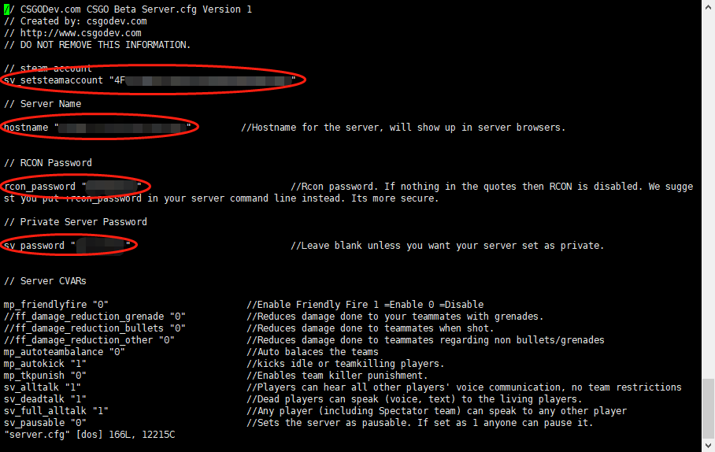
修改完以上参数之后，服务器便可以启动了，关于server.cfg中的其他参数说明，可以在server.cfg文件的注释中查看，也可以前往CSGODev查看
开放UDP 27015端口
前往阿里云服务器防火墙控制面板，添加防火墙规则
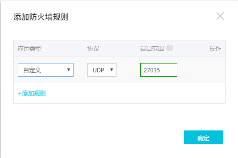
安装screen，启动CS:GO服务器
安装screen，以便CS:GO服务进程在后台运行1
sudo install screen
返回csgo_server目录，使用screen创建新的会话1
2cd /home/steam/steamcmd/csgo_server/
screen -S csgo
注意：当screen会话未结束时，在下次ssh登陆时可以使用命令”screen -r csgo”来恢复会话
此时屏幕会清屏，说明你成功进入到”csgo”这个会话当中，这时开始启动服务器1
./srcds_run -debug -game csgo -console -port 27015 -steamcmd_script /home/steam/steamcmd/update.txt -steam_dir /home/steam/ +map de_dust2
若系统提示没有srcds_run这个文件，则是你当前的文件夹目录不正确
参数解释：
-debug 开启调试模式
-game 指明游戏，此处是csgo
-console 打开游戏控制台
-port 游戏服务器端口，此处是27015
-steamcmd_script 运行steamcmd的脚本文件地址
-steam_dir Steam的安装地址
+map 服务器加载的地图（此处只能用官方地图，创意工坊地图请看后面）
当看到如下图所示的界面之后，说明服务器成功地运行，可以在游戏中连接了
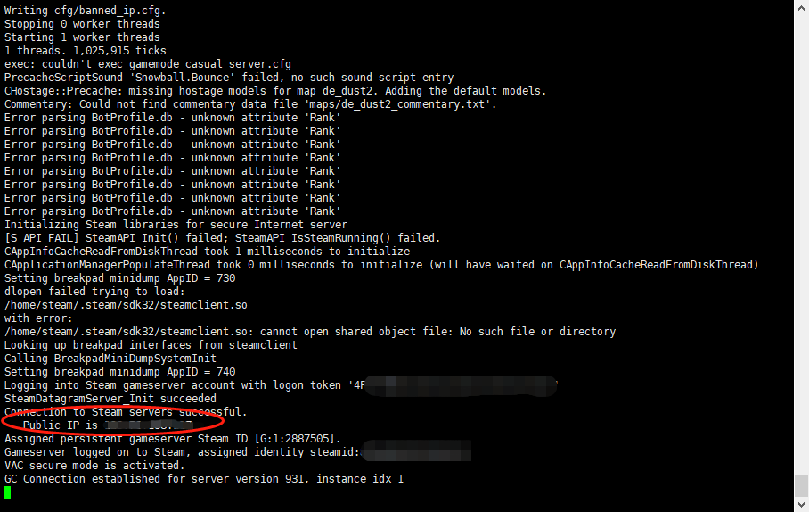
记下红圈中的服务器IP地址，稍后连接使用
在游戏中连接服务器
由于国服的社区服务器浏览器和世界服的不一样，世界服现在也免费了，因此目前我们使用世界服进行连接。（关于如何切换到世界服，请自行百度）
打开社区服务器浏览器，点击“收藏夹选项卡”，输入服务器IP地址，点击“在此地址上查找游戏”，然后选择找到的服务器，点击“将选定游戏服务器添加至收藏夹”
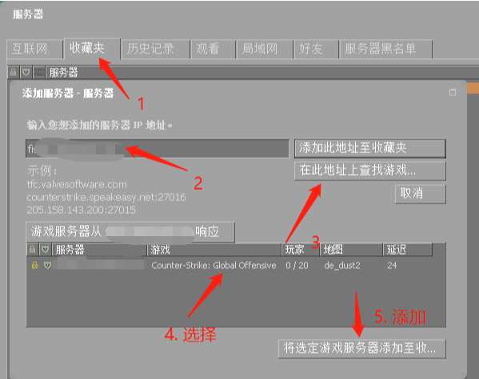
连接服务器，双击收藏夹中刚刚添加的服务器，输入密码即可，注意输入法
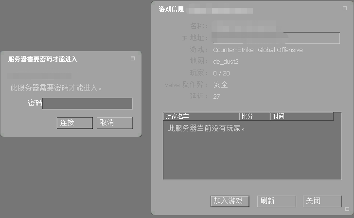
Enjoy！
PS：实测4人在64tick情况下，loss和choke基本为0%，延迟稳定在25ms左右
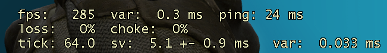
使用社区地图
注册Steam网页API
前往Steam网页API注册页面注册API，获得Authkey（注意不要泄露出去）
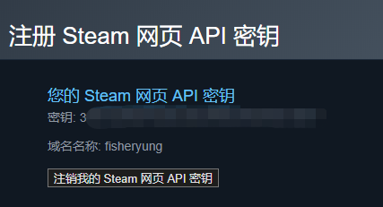
获取创意工坊地图ID
在steam的创意工坊中打开自己想要的地图的页面，复制浏览器地址上的ID。比如说，aim_map_c的地图ID是465367694
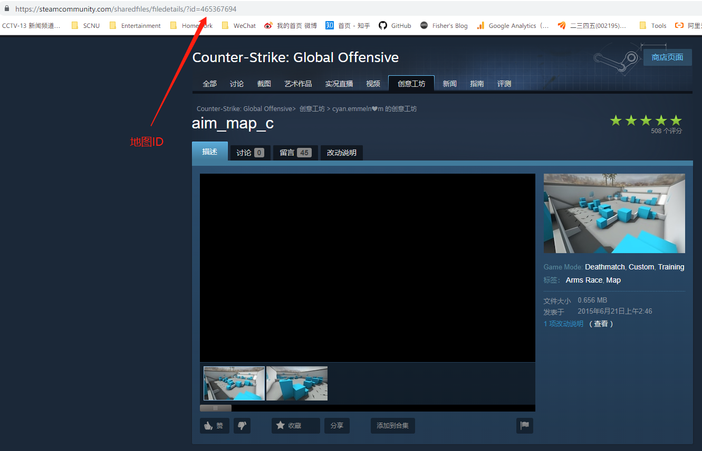
启动服务器
在csgo_server文件夹中输入命令1
./srcds_run -debug -game csgo -console -port 27015 -steamcmd_script /home/steam/steamcmd/update.txt -steam_dir /home/steam/ +host_workshop_map 465367694 -authkey 3XXXXXXXXXXXXXXXXXXXXXXX
相同的参数在之前有解释，这里只解释新的参数：
+host_workshop_map 465367694 切换地图为来自创意工坊的地图，后面的数字填入刚刚获取的地图ID
-authkey 3XXXXXXXXXX Steam网页API的Authkey，填入刚刚获取的API Authkey
若看到以下Log，则表示服务器切换到创意工坊的地图成功
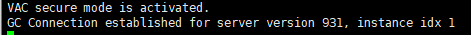
按照上面的步骤再次连接服务器，就会发现服务器地图切换为创意工坊的地图了，Enjoy！
更换地图
如果不想通过重启服务器的方法来更换地图，可以在服务器控制台中输入以下命令：
1 | changelevel XXXX // XXXX可以是创意工坊地图ID，也可以是官方地图名字 |
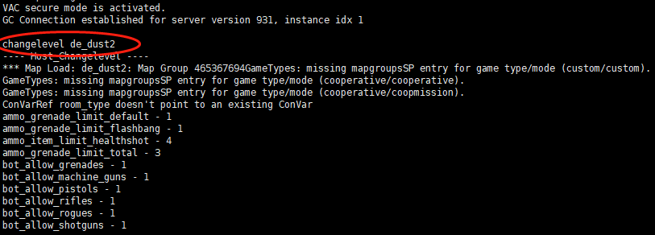
更多
更多关于创意工坊地图的命令，可以参考官方给出的文档：CSGO_Workshop_For_Server_Operators
添加Mod和插件
因为我只和同学玩玩普通的创意工坊地图，不需要打Mod，因此这里我并没有做更多的研究。在此引用Wilf博客中的教程，有兴趣的人可以去研究一下
常用插件为sourcemod和metamod，装了这俩之后才能装满十，kz，僵尸等等插件。
其它有用的插件比如warmod等等可以在x社区找到，安装方法一般是放在cfg以及addon文件夹内，使用方法在插件原文里说明的也比较详细，这里给出网址不赘述了。
https://www.sourcemod.net
https://www.metamodsource.net
https://bbs.93x.net总结
至此，CS:GO私人服务器的搭建就完成了，可以与同学愉快地玩耍了。要想让服务器在后台继续运行，直接断开ssh连接即可。在下次ssh连接登录后，想要恢复之前的screen会话，输入以下命令即可：
1 | screen -r csgo |
教程中用到网址汇总
| 网址 | 介绍 |
|---|---|
| https://wilfoo.com/?p=92https://wilfoo.com/?p=92 | Wilf的博客 |
| https://steamcommunity.com/dev/managegameservers | Steam 游戏服务器帐户管理 |
| http://csgodev.com/csgodev-server-cfg-for-csgo/ | CS:GO配置文件来源 |
| https://steamcommunity.com/dev/apikey | Steam网页API注册 |
| https://developer.valvesoftware.com/wiki/CSGO_Workshop_For_Server_Operators | 创意工坊地图操作手册 |
| https://www.sourcemod.net | Mod插件 |
| https://www.metamodsource.net | Mod插件 |
| https://bbs.93x.net | Mod插件 |